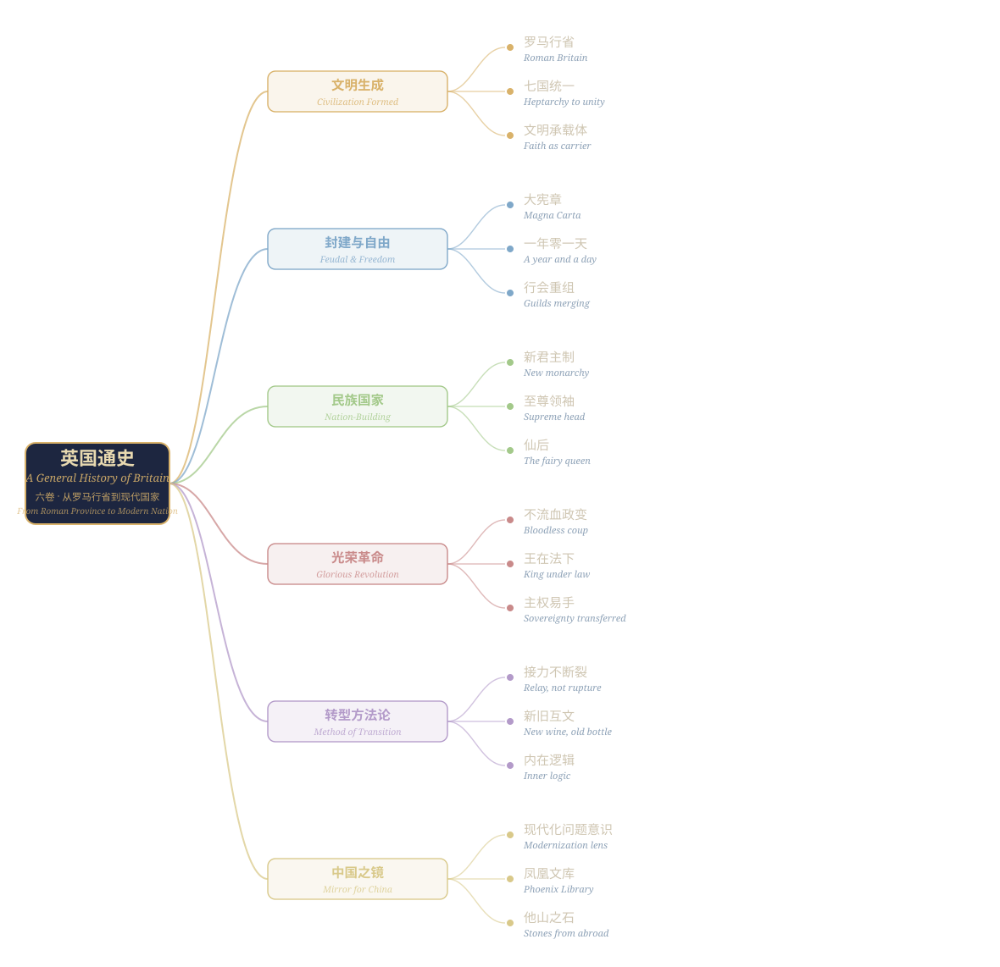

英国通史
〇 · 书籍信息
基本信息
| 书名 | 「英国通史」是中国学者写给中文读者的第一部大型英国通史——六卷即六个时代：罗马不列颠与盎格鲁-撒克逊 → 中世纪 → 16—17 世纪转型 → 工业革命与帝国 → 20 世纪——一部「小岛」长成「大世界」的全过程 |
|---|---|
| 主编 | 钱乘旦——北京大学博雅讲席教授、英国史研究的领军学者：通史的组织方式是「集体写作＋统一框架」——每卷自成专史，六卷合为一国 |
| 出版框架 | 江苏人民出版社「凤凰文库」——出版说明写明主旨：「从中国由农业文明向工业文明转型、由传统社会走向现代社会这样一个大视角出发」——中国学者写英国史，背后是中国自身的现代化问题意识 |
| 一句话 | 英国的历史是一部「把权力装进笼子」的演进史——从《大宪章》到「王在议会」，从庄园到工厂，从蕞尔小岛到世界帝国再回落：它示范了一个民族如何用制度消化每一次剧变。 |
一 · 核心主题总览
这部六卷通史里的四组母题：① 文明的层累
第一卷从罗马不列颠讲起：「罗马不列颠的终结也是整个罗马帝国断裂、沉沦和衰亡的一部分。但任何终点也都是起点，经过一系列的传承、更新和转型，基督教世界出现在历史舞台上」——「基督教在不列颠文明生成时期的独特作用，使它不仅是一种宗教，更是一种文明的承载体」——英国文明的底是三层叠加：罗马的遗产、盎格鲁-撒克逊的重建、基督教的承载。
② 封建与自由的悖论
第二卷处理中世纪：「11 世纪中叶，伴随威廉一世征服……早期的英国王权远比欧洲强大」——然而「自 13 世纪起，英国政治格局的天平开始向贵族一方倾斜……1215 年的《大宪章》、1258 年的《牛津条例》和 1265 年及 1295 年召集的议会，是实现这种转折的几个标志性事件。它们被看作是英国君主立宪制的先导」——城市特许状则埋下另一颗种子：「假如一个维兰来到城市定居，则在一年零一天之后，他将成为一个市民」——自由在封建制度内部生长。
③ 光荣革命的智慧
第三卷把 1688 写成转折的完成：「这一次，他们做出了极富智慧的选择，即以武力胁迫为形式，悄悄地发动了一场旨在夺取国家最高权力的宫廷政变」——「光荣革命后，议会确立了自己的主权地位……国王必须按照『王在法下』和『王在议会』的原则进行统治」——「英国从一个漂浮于大洋的蕞尔小国，已经发展成为一个堪与西班牙、法国等大国比肩的欧洲强国」——革命的最高境界是「不流血地换掉主权归属」。
④ 转型的持续性
贯穿六卷的方法论：「这场革命是社会转型时期英国民族国家形成与巩固过程中发生的重大事件，它既符合欧洲现代民族国家的一般规律，又符合英国历史演进的内在逻辑」——写史者反复强调「内在逻辑」：英国的全部秘密，在于每一次剧变都被装回既有的制度容器里消化——转型不靠断裂，靠接力。
二 · 第一卷 罗马不列颠与盎格鲁-撒克逊 —— 文明的生成—— 哈德良长城 · 七国 · 基督教 ——
罗马行省四百年
第一篇「罗马不列颠」分七章细写：「从史前到罗马征服」「罗马皇帝与行省」「地方政府」「军队」「城市」「农村」「晚期罗马不列颠」——罗马人给不列颠留下了城市、道路、法律与基督教，但 5 世纪撤离后一切坍塌：「罗马不列颠的终结也是整个罗马帝国断裂、沉沦和衰亡的一部分」——留下的问题是：文明撤走之后，土地上的社会如何重新开始？
◆ 语言学习 · 概念 · 行省
| 罗马不列颠 | 公元 43—约 410 年：不列颠作为帝国行省 |
|---|---|
| 哈德良长城 | 帝国的北界：文明的边界线 |
| 城市与道路 | 罗马遗产的骨架：后世城镇的底稿 |
| 晚期危机 | 4 世纪起帝国的整体衰败：行省随之撤离 |
句型 ｜ 「任何终点也都是起点。」——通史开卷的辩证法：罗马的撤离不是句号是逗号——文明史的总规则：每一次坍塌都清出一次重建的地基。
七国与统一
第二篇「盎格鲁-撒克逊英格兰」写重建：「七国争霸」「基督教的传播」「维京人入侵与英格兰统一」「政治法律制度」「中央层面的治理」「地方层面的治理」「社会经济生活」「思想文化」——从七国混战到阿尔弗雷德大帝抵抗维京、再到英格兰统一：撒克逊人用几百年把部落社会升级成王国体系；郡（shire）与百户区的治理框架，一直活到今天的英国地方行政里。
◆ 语言学习 · 概念 · 七国时代
| 七国争霸 | Heptarchy：肯特、韦塞克斯等七国并立 |
|---|---|
| 阿尔弗雷德 | 抵抗维京的「大帝」：统一进程的发动机 |
| 郡制 | shire：地方治理的基本单位，沿用千年 |
| 基督教传播 | 文明承载体：罗马撤走后的黏合剂 |
习语 ｜ 「基督教世界出现在历史舞台上。」——文明生成的判词：宗教在这里不只是信仰，是罗马遗产的集装箱——没有教会的抄写与组织，撒克逊时代会是一片空白。
三 · 第二卷 中世纪 —— 封建与自由的悖论—— 大宪章 · 议会 · 特许状 ——
从强势王权到等级君主制
第二卷的核心转折在 13 世纪：「自 13 世纪起，英国政治格局的天平开始向贵族一方倾斜，主要原因在于约翰王违背了所谓的封建习俗，以及其内政与外交的大挫败」——于是有了《大宪章》（1215）、《牛津条例》（1258）与议会（1265、1295）：「它们被看作是英国君主立宪制的先导，而 1688 年『光荣革命』仅仅是对这种宪政传统的复归」——立宪不是 1688 年的发明，是 13 世纪开始的长跑；光荣革命只是撞线。
◆ 语言学习 · 概念 · 大宪章
| 《大宪章》 | 1215 年：王权第一次被成文法约束 |
|---|---|
| 等级君主制 | 国王与贵族精英的联合统治 |
| 宪政先导 | 13 世纪事件群的定位：1688 只是复归 |
| 约翰王 | 失信与败仗：宪政的「反面功臣」 |
句型 ｜ 「1688 年『光荣革命』仅仅是对这种宪政传统的复归。」——全书最见功力的判断：把光荣革命从「开端」降级为「复归」——英国式变革的密码：新瓶装旧酒，旧酒是新酿。
城市的空气
中世纪卷的另一条线是城市特许状：「1200 年布里德里奇沃特的特许状中说：『该城市所有的市民都是自由市民』」；更有那句名言的雏形——「亨利一世授予纽卡斯尔的特许状中规定：『假如一个维兰来到城市定居，则在一年零一天之后，他将成为一个市民，他将可以永远住居在那里』」——市民有资格携带武器、免除劳役、自由择业，「城市空气使人自由」在英国的法条里步步落地；而市民集体还长出了组织：「伦敦 1422 年有行会 111 个，15 世纪中期以后行会数量只有 70 多个。在竞争中合并重组」——中世纪晚期，行会已在孕育公会与市政权力。
◆ 语言学习 · 概念 · 特许状
| 维兰 | 庄园农奴：一年零一天即成市民的起点身分 |
|---|---|
| 特许状 | 城市的自由证书：王权与城市的契约 |
| 市民权 | 携带武器、免劳役、自由择业、土地保有 |
| 行会→公会 | 111 个行会合并重组：资本主义的早期骨架 |
习语 ｜ 「假如一个维兰来到城市定居，则在一年零一天之后，他将成为一个市民。」——中世纪最温柔的法条：自由可以被「住」出来——制度为社会流动开门的方式，常常只是规定一个期限。
四 · 第三卷 转型与革命 —— 民族国家的建构—— 都铎 · 内战 · 光荣革命 ——
都铎新君主制
第三卷给 16 世纪定的任务是「建构民族国家」：「亨利七世，在终结封建内讧的同时，用新君主制代替了无政府主义」——亨利八世「借助离婚案发动了自上而下的宗教改革，不但如愿娶了具有新思想的安妮·博林，而且取代教皇登上了英格兰民族教会至尊领袖的地位」——玛丽复辟天主教「大开杀戒」而败，「伊丽莎白一世……把自己『嫁』给了英吉利民族，获得了『仙后』的美誉」——都铎百年：王权与民族互相成全。
◆ 语言学习 · 概念 · 民族国家
| 新君主制 | 亨利七世起步：超越封建割据的集权 |
|---|---|
| 至尊领袖 | 亨利八世的教皇职位夺取：政教合一的本土化 |
| 仙后 | 伊丽莎白的称号：嫁给民族的处女王 |
| 民族一体性 | 现代主权国家的第一要素 |
句型 ｜ 「所谓民族国家，就是现代主权国家。」——第三卷的定义句：民族一体性与国家主权是两个基本要素——英国 modern 的起点不是经济而是政治身份。
光荣革命
1688 年被写成「极富智慧的选择」：「詹姆士二世上台后，无意去化解……反而变本加厉地走专制主义的老路，英国人再次面临历史的十字路口。这一次，他们做出了极富智慧的选择，即以武力胁迫为形式，悄悄地发动了一场旨在夺取国家最高权力的宫廷政变。在这场『不流血的』光荣革命中，托利党人和辉格党人携手反抗专制体制」——结果是主权易手而制度续存：「国王必须按照『王在法下』和『王在议会』的原则进行统治。随着君主立宪制的重新确立，英国的主权不再属于君主，而属于整个英吉利民族」。
◆ 语言学习 · 概念 · 王在法下
| 宫廷政变 | 光荣革命的实质：武力胁迫但不流血 |
|---|---|
| 托利与辉格 | 两大党携手：政党政治的成年礼 |
| 王在法下 | 统治的第一原则：权力受法约束 |
| 主权易手 | 从君主到民族：革命的真实成果 |
习语 ｜ 「他们做出了极富智慧的选择。」——写史者的赞叹：英国人的智慧不在不革命，在把革命做成手续——「悄悄地」三个字，是宪政最高的技术含量。
五 · 人物图鉴与成长弧线—— 主角配角 · 一张表看穿 ——
主要人物
钱乘旦——总主编——中国英国史研究的领军学者：以「现代化转型」的问题意识统摄六卷，让英国史成为中国的一面镜子
亨利八世——宗教改革的发动机——「借助离婚案发动自上而下的宗教改革」：政教关系在英格兰的重新洗牌
伊丽莎白一世——「仙后」——「把自己『嫁』给了英吉利民族」：都铎新君主制的顶峰
威廉一世——征服者——1066 年哈斯丁斯之后「早期的英国王权远比欧洲强大」：封建制度在英国的独特起点
次要人物（功能位）
| 约翰王 | 「反面功臣」——违约与败仗促成《大宪章》：坏国王的「制度贡献」 |
|---|---|
| 阿尔弗雷德大帝 | 统一进程的发动机——抵抗维京、复兴文教：撒克逊英格兰的国家奠基人 |
| 玛丽一世 | 复辟的失败者——「反攻倒算相当恐怖」：背离民族主义的注脚 |
| 希尔顿 | 马克思主义史学家——「关于小城镇在社会过渡或者转型中发挥了积极作用的理论」：中世纪卷学术史的引用点 |
六 · 主题与象征—— 每个道具都在说话 ——
| 哈德良长城 ↔ 边界 | 文明的边界——罗马来时划下，罗马走时失效：边界的意义由实力决定 |
|---|---|
| 大宪章 ↔ 笼子 | 权力约束——1215 年的第一根栏杆：宪政是长跑不是事件 |
| 一年零一天 ↔ 自由 | 市民权——自由可以被「住」出来：制度为社会流动开门 |
| 仙后 ↔ 民族 | 王权与民族——「把自己嫁给英吉利民族」：政治合法性的新来源 |
| 蕞尔小岛 ↔ 强国 | 体量与制度——「漂浮于大洋的蕞尔小国」长成欧洲强国：制度胜过体量 |
七 · 写作手法赏析—— 怎么写，就能怎么学 ——
① 问题意识先行
出版说明亮出「中国现代化」视角——写他国史为解本国题：通史的价值取向从第一页就透明
② 集体写作统一框架
六卷分由专家执笔——「转型」作为贯穿线索：分工而不散，靠框架缝合
③ 转折点写作法
1215 / 1258 / 1265 / 1295 / 1688 一串年份立骨——把宪政史写成事件链：宏大叙事落在可查的节点上
④ 史料直引
特许状原文整段引录——「该城市所有的市民都是自由市民」：让中世纪自己开口说话
⑤ 学术史随文
希尔顿理论、戴尔《转型的时代》随文入注——通史不回避争论：把史学史织进叙事
八 · 名段欣赏—— 原文精读 · 逐段赏析 ——
九 · 金句摘录—— 14 条 · 中英对照 · 带出处 ——
"罗马不列颠的终结也是整个罗马帝国断裂、沉沦和衰亡的一部分。但任何终点也都是起点。"—— 第一卷 · 罗马不列颠
"基督教在不列颠文明生成时期的独特作用，使它不仅是一种宗教，更是一种文明的承载体。"—— 第一卷
"自 13 世纪起，英国政治格局的天平开始向贵族一方倾斜，主要原因在于约翰王违背了所谓的封建习俗。"—— 第二卷 · 导语
"1215 年的《大宪章》、1258 年的《牛津条例》和 1265 年及 1295 年召集的议会，是实现这种转折的几个标志性事件。"—— 第二卷 · 导语
"它们被看作是英国君主立宪制的先导，而 1688 年「光荣革命」仅仅是对这种宪政传统的复归。"—— 第二卷 · 导语
"假如一个维兰来到城市定居，则在一年零一天之后，他将成为一个市民，他将可以永远住居在那里。"—— 第二卷 · 亨利一世特许状
"伦敦 1422 年有行会 111 个，15 世纪中期以后行会数量只有 70 多个。在竞争中合并重组。"—— 第二卷 · 城市变迁
"16-17 世纪，英国开始向现代转型……其核心是建构和巩固民族国家。"—— 第三卷 · 导语
"亨利八世借助离婚案发动了自上而下的宗教改革，而且取代教皇登上了英格兰民族教会至尊领袖的地位。"—— 第三卷 · 都铎
"在精神上，她把自己「嫁」给了英吉利民族，获得了「仙后」的美誉。"—— 第三卷 · 伊丽莎白一世
"这一次，他们做出了极富智慧的选择，即以武力胁迫为形式，悄悄地发动了一场旨在夺取国家最高权力的宫廷政变。"—— 第三卷 · 光荣革命
"国王必须按照「王在法下」和「王在议会」的原则进行统治。"—— 第三卷 · 光荣革命
"伴随民族国家的成长，英国从一个漂浮于大洋的蕞尔小国，已经发展成为一个堪与西班牙、法国等大国比肩的欧洲强国。"—— 第三卷 · 结语
"它既符合欧洲现代民族国家的一般规律，又符合英国历史演进的内在逻辑。"—— 第三卷 · 史评
十 · 拓展阅读—— 原文 · 词条 · 译文 ——
十一 · 个人感悟与心得—— 三点心得 ——
三点感悟
① 转型靠接力不靠断裂
六卷的总启示：英国每次剧变都被装回既有制度容器消化——「光荣革命仅仅是对宪政传统的复归」：变革者最大的智慧，是让改变看起来像传统的延续。
② 坏国王也能长出好制度
约翰王与《大宪章》：制度的进步常常由统治者的失误倒逼——问题不是有没有坏领导，是坏领导出现时社会有没有接住的手。
③ 给流动留一条期限
「一年零一天」的当代读法：让身份可以被时间和行为改变——任何社会留住活力的方式，都是给底层留一条可计算的上行通道。
六卷读完，英国史留下的最深印象不是帝国，而是那条一以贯之的手续线——从《大宪章》的栏杆，到特许状的期限，到「王在法下」的原则：权力每被驯服一次，就被写进一条可执行的条文。所谓英国式智慧，就是把愤怒写成法条、把革命写成手续——转型不必撕裂社会，这六个字，是这部通史献给所有转型中社会的全部礼物。
十二 · 一页速查（复习用）
| 文明三层 | 罗马遗产＋撒克逊重建＋基督教承载 |
|---|---|
| 宪政长跑 | 大宪章（1215）→ 光荣革命（1688）：先导与复归 |
| 一年零一天 | 城市特许状：自由被「住」出来 |
| 民族国家 | 16 世纪的核心任务：主权先行 |
| 王在法下 | 光荣革命的成果：主权移交民族 |
十三 · 全书思维导图—— 一图纵览 ——

一图纵览全书骨架 · 中英双语对照 · 手机端可左右滑动查看全图